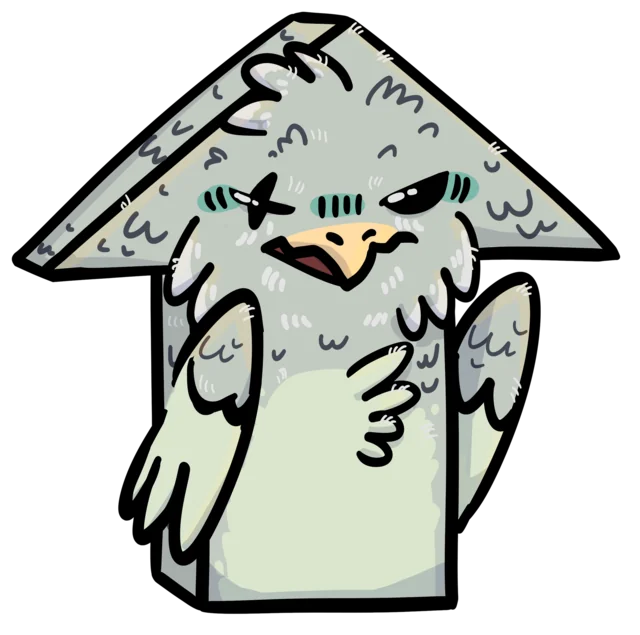
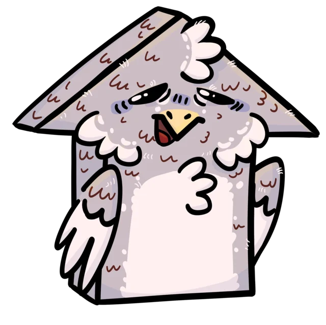
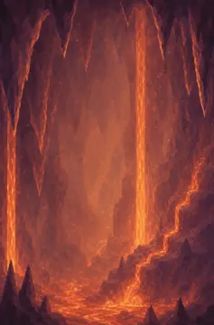

Ball is God?! টাওয়ার ঘোরান। নিজেই আঘাত হয়ে উঠুন।
একটি হার্ডকোর উল্লম্ব ডিসেন্ট আর্কেড যেখানে অনুভূমিক টেনে টাওয়ারটি পতনশীল Espa এর চারপাশে ঘোরে। নিরাপদ অবতরণ এড়িয়ে যান, একটি কম্বো স্ম্যাশ চার্জ করুন এবং একটি পৌরাণিক জগতের মধ্য দিয়ে যান যেখানে একটি অরক্ষিত আঘাত রান শেষ করে।
সক্রিয় প্রোডাকশন: দশটি লোকেশনের দৃশ্য, বস, শাখা-প্রশাখার সংলাপ আর খেলার নিয়ম বদলে দেওয়া কর্মের পথ।
ঘোরানটাওয়ারটিকে Espa এর চারপাশে টেনে আনুন
ঝুঁকিতিনটি নিরাপদ অবতরণ এড়িয়ে যান
স্ম্যাশপ্ল্যাটফর্ম ভেঙে এগিয়ে যান
বর্তমান বিল্ডের ভিতরে
কথোপকথনের চেয়ে কর্ম বেশি পরিবর্তিত হয়।
আলো, নিরপেক্ষ আর অন্ধকার কর্মের পথ শিল্ডের আচরণ, সতর্কসংকেত, শত্রুর আগ্রাসন আর বসের পর্যায় বদলে দেয়, তাই গল্পই বদলে দেয় আপনার খেলার ধরন।
বিল্ড স্ট্যাটাস সক্রিয় প্রোডাকশনসমস্ত দশটি সংলাপের জগৎ
দশটি জগতের সবকটির সংলাপের পটভূমি, Ena থেকে Deka পর্যন্ত নেমে যাওয়ার ক্রমে।


বর্তমান প্রোডাকশন UI
বর্তমান বিল্ডের লেভেল নির্বাচন, সংলাপ আর ফলাফলের স্ক্রিন।
এটি বর্তমান ফ্লো, যে ক্রমে আপনি সেগুলোর দেখা পাবেন: লেভেল নির্বাচন, সংলাপ, একটি মাইলফলকের সিদ্ধান্ত, তারপর জয় বা আলাদা পরাজয়ের স্ক্রিন। নিচের প্রতিটি ভিজ্যুয়াল প্রোডাকশন Unity প্রকল্পের আর্ট ব্যবহার করে।
স্বর্গীয় রুট দশটি 100-স্তরের অধ্যায় জুড়ে জেনারেট করা স্তর নির্বাচন করে।
প্রোডাকশন মেনু 100-স্তরের অধ্যায়ে দশটি অবস্থান ম্যাপ করে এবং সরাসরি নির্বাচিত রানে খোলে।

 201
201সংলাপ হয় লোকেশনের ভেতরেই।
চরিত্রের পোর্ট্রেট, লোকেশনের আর্ট আর বক্তার নামফলক একই উল্লম্ব ফ্রেম ভাগ করে নেয়।


Shash
এগিয়ে যান, তারপর - কিন্তু ভাববেন না এটা সহজ হবে। Trials আপনার জন্য অপেক্ষা করছে যা আগের সবকিছুকে নিছক তুচ্ছ বলে মনে করবে।
04 / মাইলস্টোন পছন্দ
উত্তরটি ডিসেন্টের অংশ হয়ে যায়।
স্থানীয় স্তরে 90 এবং 100, ডেডিকেটেড প্যানেল সংলাপের সমাধান করার আগে অতিরিক্ত বা হত্যার সিদ্ধান্তের জন্য অনুরোধ করে।

ছেড়ে দিন
হত্যা
05 / ফলাফল মেনু
জিতলে এগিয়ে যান, হারলে একই চ্যালেঞ্জে ফিরে আসুন।
বর্তমান বিল্ডে দুটি পৃথক ফলাফলের অবস্থা রয়েছে: প্যানেলউইন রিপ্লে এবং পরবর্তী স্তরের অফার করে, যেখানে PanelOver একটি অবিশ্বাস্য রিপ্লে অ্যাকশন রাখে।
বিজয় · PanelWin
ডিসেন্ট সম্পন্ন
 রিপ্লে
পরবর্তী
রিপ্লে
পরবর্তী
রিপ্লে
পরবর্তী
সংলাপের চরিত্র
মুখগুলো নিচের পথে দেখা হলো।
বৈধ প্রোডাকশন ওপেন-ক্লোজড পোর্ট্রেট জোড়া সহ 25টি অক্ষর নীচে অন্তর্ভুক্ত করা হয়েছে। এক্সপ্রেশন স্যুইচ করতে একটি কার্ড হোভার বা ফোকাস করুন।







গেম ওভারভিউ
Ball is God?! হলো ঘূর্ণায়মান টাওয়ার বেয়ে নিচে পড়ার একটি হার্ডকোর আর্কেড গেম।
মূল ভাবনা
Espa-কে একটি ঐশ্বরিক টাওয়ারের নিচে নামিয়ে আনুন। একটি ভুলেই রান শেষ হয়ে যেতে পারে, আর আপনার বড় সিদ্ধান্তগুলো বদলে দেয় জগৎটা কীভাবে খেলা হয়।
বর্তমান বিল্ড
দশটি অবস্থানের দৃশ্য, পদ্ধতিগত টাওয়ার জেনারেশন, কম্বো স্ম্যাশ, সোয়াইপ শিল্ড, বস কনফিগারেশন, ব্রাঞ্চিং ডায়ালগ, প্রোডাকশন মেনু এবং এক্সপ্রেশন-রেডি পোর্ট্রেট প্রয়োগ করা হয়েছে।
লক্ষ্য খেলোয়াড়
যারা কঠিন মোবাইল আর্কেড গেম, ঝুঁকি-আর-পুরস্কারের টাইমিং আর বস পছন্দ করে, সঙ্গে অনুসরণ করার মতো একটি গল্প।
স্ট্যাটাস
সক্রিয় প্রোডাকশন। সাম্প্রতিক কাজে রয়েছে রানটাইম সিস্টেম, জগতের আর্ট, টেস্টিং এবং ফোনে গেমটি কেমন খেলা যায় তা।
বৈশিষ্ট্য
Ball is God?!-এ আপনি যা করেন
টেনে ঘোরানোর ডিসেন্ট
অনুভূমিক ড্র্যাগ টাওয়ারটিকে স্বয়ংক্রিয়ভাবে পড়ে যাওয়া Espa এর চারপাশে ঘোরে, ফাঁক, বিপদ এবং নিরাপদ প্ল্যাটফর্মের লাইন আপ করে।
হার্ডকোর আর্কেড চাপ
একটি অসতর্ক আঘাতেই রান শেষ হয়ে যায়, তাই টাওয়ারটা ভালো করে দেখে নিয়ে প্রতিটি চাল ঠিক সময়ে দিতে হয়।
বস এবং পৌরাণিক জগত
দশটি লোকেশনের দৃশ্য, প্রতিটির নিজস্ব বস, গল্পটিকে এক জগৎ থেকে আরেক জগতে বয়ে নিয়ে যায়।
নিয়ম বদলে দেওয়া সিদ্ধান্ত
করুণা, বল এবং কর্ম পরিবর্তন সংলাপ, ঢাল নিয়ম, শত্রু আগ্রাসন, টেলিগ্রাফ এবং বস পর্যায়.
গেমপ্লে লুপ
Ball is God?! খেলার নিয়ম
- ধাপ 01ডিসেন্ট পড়ুন
পরের প্ল্যাটফর্ম, ফাঁক আর বিপদগুলো দেখে নিন, আর পড়ার সময় নিরাপদ টাইমিংয়ের সুযোগ খুঁজুন।
- ধাপ 02টাওয়ার ঘোরান
অনুভূমিক ড্র্যাগ বিশ্বকে Espa এর চারপাশে ঘুরিয়ে দেয়, একটি নিরাপদ প্ল্যাটফর্ম বা ইচ্ছাকৃত ফাঁক সারিবদ্ধ করে।
- ধাপ 03ঝুঁকি এবং স্ম্যাশ
একটি কম্বো স্ম্যাশ চার্জ করতে তিনটি প্ল্যাটফর্ম এড়িয়ে যান, তারপরে কাঠামো ভেঙ্গে যান যখন ঢালটি একটি মারাত্মক ভুল কভার করে।
- ধাপ 04ফলাফল নির্বাচন করুন
করুণা এবং বলপ্রয়োগের আকৃতির কর্ম, সংলাপ এবং গেমপ্লের নিয়ম শত্রু এবং মনিবদের মধ্যে বাহিত হয়।
গল্প / জগৎ
এক পৌরাণিক টাওয়ার, যেখানে আপনার সিদ্ধান্তগুলো আপনার সঙ্গেই নেমে আসে।
Ball is God?! মোবাইল উল্লম্ব-ডিসেন্ট আর্কেডের প্রতি শৈশবের মুগ্ধতা থেকে শুরু হয়েছিল: পড়ার ফাঁক, দ্রুত প্রতিক্রিয়া দেখানো এবং সহজাত প্রবৃত্তির দ্বারা বেঁচে থাকা।
এই ধরনটি আরও অনেক কিছু বইতে পারে: বস, ব্যক্তিত্বওয়ালা চরিত্র, একটি গল্প আর নৈতিক টানাপোড়েন। বর্তমান প্রকল্পে Espa দশটি লোকেশনের দৃশ্য আর অদ্ভুত চরিত্রদের একটি দলের মধ্য দিয়ে যায়, আর সিদ্ধান্তগুলো গল্প ও খেলা দুটোই বদলে দেয়।
তাই লক্ষ্য হয়ে দাঁড়াল একটি সহজ উল্লম্ব ডিসেন্ট আর্কেড, যাতে আছে বস-লড়াইয়ের চাপ আর গল্পনির্ভর RPG-র পরিণতি।
- ভিশন
- পৌরাণিক গল্পের একটি ঘূর্ণায়মান-টাওয়ার আর্কেড
- বর্তমান জগতের পরিধি
- দশটি লোকেশন ও বস কনফিগারেশন
- গল্পের পর্যায়
- পূর্ণ দৈর্ঘ্যের গল্পের খসড়া সম্পন্ন
- প্রোডাকশন অবস্থা
- সক্রিয় প্রোডাকশন
এক নজরে
সহজ টেনে চালানোর কন্ট্রোল, সঙ্গে নিয়ম বদলে দেওয়া একটি গল্প।
টেনে ঘোরানোর কন্ট্রোল সঙ্গে সঙ্গে সাড়া দেয়। বাকি মজা আসে পৌরাণিক জগৎ, বস আর খেলার ধরন বদলে দেওয়া সিদ্ধান্ত থেকে।
বর্তমান বিল্ডে ইতিমধ্যেই মিলেছে নিয়মনির্ভর টাওয়ার জেনারেশন, ঝুঁকি-আর-পুরস্কারের স্ম্যাশ, এক আঘাতে ব্যর্থতা, বস, শাখা-প্রশাখার সংলাপ আর গেমপ্লে বদলে দেওয়া কর্ম।
- জেনার
- গল্পনির্ভর উল্লম্ব ডিসেন্ট আর্কেড
- লক্ষ্য প্ল্যাটফর্ম
- iOS / Android
- খেলার সেশনের ধরন
- দ্রুত, দক্ষতা-নির্ভর রাউন্ড
- স্টুডিও
- WillowinWorlds
অ্যাসেট ডাউনলোড করুন
Ball is God?! প্রেস এবং ক্রিয়েটর সামগ্রী
প্রেস কভারেজ, পাবলিশার রিভিউ আর স্টোর পেজের রেফারেন্সের জন্য WebP প্রিভিউ। অনুরোধ করলে পূর্ণ রেজোলিউশনের সোর্স ফাইল পাওয়া যায়।
ব্র্যান্ড ও চরিত্র
গেম আইকন প্লাস সমস্ত 25টি বর্তমান অক্ষর যাতে সম্পূর্ণ প্রোডাকশন ডায়ালগ পোর্ট্রেট রয়েছে৷ নামগুলি Unity স্থানীয়করণ কীগুলির সাথে মেলে৷
Espaপ্লেয়ার চরিত্রের প্রতিকৃতি।
Revlaপ্রোডাকশন সংলাপের প্রতিকৃতি।
Shashপ্রোডাকশন সংলাপের প্রতিকৃতি।
Shushপ্রোডাকশন সংলাপের প্রতিকৃতি।
Shishপ্রোডাকশন সংলাপের প্রতিকৃতি।
Gigoপ্রোডাকশন সংলাপের প্রতিকৃতি।
Gogaপ্রোডাকশন সংলাপের প্রতিকৃতি।
Gigaপ্রোডাকশন সংলাপের প্রতিকৃতি।
Askoldপ্রোডাকশন সংলাপের প্রতিকৃতি।
Mirasপ্রোডাকশন সংলাপের প্রতিকৃতি।
Hihপ্রোডাকশন সংলাপের প্রতিকৃতি।
Hehপ্রোডাকশন সংলাপের প্রতিকৃতি।
Hahপ্রোডাকশন সংলাপের প্রতিকৃতি।
Musyaপ্রোডাকশন সংলাপের প্রতিকৃতি।
Dusyaপ্রোডাকশন সংলাপের প্রতিকৃতি।
Susyaপ্রোডাকশন সংলাপের প্রতিকৃতি।
Vladusপ্রোডাকশন সংলাপের প্রতিকৃতি।
Frishaপ্রোডাকশন সংলাপের প্রতিকৃতি।
Lurenপ্রোডাকশন সংলাপের প্রতিকৃতি।
Kurenপ্রোডাকশন সংলাপের প্রতিকৃতি।
Don Yagonপ্রোডাকশন সংলাপের প্রতিকৃতি।
Luryaপ্রোডাকশন সংলাপের প্রতিকৃতি।
Khleyaপ্রোডাকশন সংলাপের প্রতিকৃতি।
Varonপ্রোডাকশন সংলাপের প্রতিকৃতি।
Whiteপ্রোডাকশন সংলাপের প্রতিকৃতি।
মেনু ব্যাকগ্রাউন্ড
স্বর্গীয় স্তর-নির্বাচন সিস্টেম দ্বারা ব্যবহৃত বর্তমান উত্পাদন শিল্পকর্ম।
 স্বর্গীয় মেনু
স্বর্গীয় মেনু

উল্লম্ব ডিসেন্ট জগৎ
দশটি বর্তমান অবস্থানের ব্যাকগ্রাউন্ডের সম্পূর্ণ সেট, Ena থেকে Deka পর্যন্ত অর্ডার করা হয়েছে৷
 01 · আকাশের জগৎEna উল্লম্ব ডিসেন্ট ব্যাকগ্রাউন্ড।
01 · আকাশের জগৎEna উল্লম্ব ডিসেন্ট ব্যাকগ্রাউন্ড।
 02 · মহাকাশ জগতDyo উল্লম্ব ডিসেন্ট ব্যাকগ্রাউন্ড।
02 · মহাকাশ জগতDyo উল্লম্ব ডিসেন্ট ব্যাকগ্রাউন্ড।
 03 · ঝড়ের জগৎTria উল্লম্ব ডিসেন্ট ব্যাকগ্রাউন্ড।
03 · ঝড়ের জগৎTria উল্লম্ব ডিসেন্ট ব্যাকগ্রাউন্ড।
 04 · তুষারের জগৎTessera উল্লম্ব ডিসেন্ট ব্যাকগ্রাউন্ড।
04 · তুষারের জগৎTessera উল্লম্ব ডিসেন্ট ব্যাকগ্রাউন্ড।


05 · আগ্নেয়গিরির জগৎPente ব্যাকগ্রাউন্ড; গেমে অ্যানিমেটেড। 06 · মহাসাগরের জগৎEksi উল্লম্ব ডিসেন্ট ব্যাকগ্রাউন্ড।
06 · মহাসাগরের জগৎEksi উল্লম্ব ডিসেন্ট ব্যাকগ্রাউন্ড।
 07 · মরুভূমির জগৎEpta উল্লম্ব ডিসেন্ট ব্যাকগ্রাউন্ড।
07 · মরুভূমির জগৎEpta উল্লম্ব ডিসেন্ট ব্যাকগ্রাউন্ড।
 08 · বনের জগৎOhto উল্লম্ব ডিসেন্ট ব্যাকগ্রাউন্ড।
08 · বনের জগৎOhto উল্লম্ব ডিসেন্ট ব্যাকগ্রাউন্ড।
 09 · গুহার জগৎEnnea উল্লম্ব ডিসেন্ট ব্যাকগ্রাউন্ড।
09 · গুহার জগৎEnnea উল্লম্ব ডিসেন্ট ব্যাকগ্রাউন্ড।
 10 · নরকের জগৎDeka উল্লম্ব ডিসেন্ট ব্যাকগ্রাউন্ড।
10 · নরকের জগৎDeka উল্লম্ব ডিসেন্ট ব্যাকগ্রাউন্ড।
স্টোরি আর্কেড ব্যাকগ্রাউন্ড
সম্পূর্ণ সংলাপ-অবস্থান সেট: হল অফ লাইট প্লাস সমস্ত দশটি বিশ্বের জন্য ব্যাকগ্রাউন্ড।
 00 · হল অফ লাইটখোলার সংলাপের পটভূমি।
00 · হল অফ লাইটখোলার সংলাপের পটভূমি।
 01 · আকাশের সংলাপEna গল্পের পটভূমি।
01 · আকাশের সংলাপEna গল্পের পটভূমি।
 02 · মহাকাশ সংলাপDyo গল্পের পটভূমি।
02 · মহাকাশ সংলাপDyo গল্পের পটভূমি।
 03 · ঝড়ের সংলাপTria গল্পের পটভূমি।
03 · ঝড়ের সংলাপTria গল্পের পটভূমি।
 04 · তুষার সংলাপTessera গল্পের পটভূমি।
04 · তুষার সংলাপTessera গল্পের পটভূমি।
 05 · আগ্নেয়গিরির সংলাপPente গল্পের পটভূমি।
05 · আগ্নেয়গিরির সংলাপPente গল্পের পটভূমি।
 06 · মহাসাগর সংলাপEksi গল্পের পটভূমি।
06 · মহাসাগর সংলাপEksi গল্পের পটভূমি।
 07 · মরুভূমির সংলাপEpta গল্পের পটভূমি।
07 · মরুভূমির সংলাপEpta গল্পের পটভূমি।
 08 · বন সংলাপOhto গল্পের পটভূমি।
08 · বন সংলাপOhto গল্পের পটভূমি।
 09 · গুহা সংলাপEnnea গল্পের পটভূমি।
09 · গুহা সংলাপEnnea গল্পের পটভূমি।
 10 · নরকের সংলাপDeka গল্পের পটভূমি।
10 · নরকের সংলাপDeka গল্পের পটভূমি।
Ball is God?! FAQ
Ball is God?! নিয়ে সাধারণ প্রশ্ন
Ball is God?! কি ধরনের গেম
হার্ডকোর উল্লম্ব ডিসেন্ট আর্কেড। পড়তে থাকা Espa-কে ঘিরে টাওয়ার ঘোরাতে হয়, নিরাপদ ল্যান্ডিং এড়িয়ে স্ম্যাশ চার্জ করতে হয় আর পৌরাণিক জগতগুলো ভেদ করে এগোতে হয়।
Ball is God?! কীভাবে খেলতে হয়?
টাওয়ারটি ঘোরানোর জন্য অনুভূমিকভাবে টেনে আনুন, একটি স্ম্যাশ চার্জ করতে তিনটি প্ল্যাটফর্ম এড়িয়ে যান এবং যখন কুলডাউন শিল্ড একটি প্রাণঘাতী আঘাতকে শোষণ করতে হবে তখন উল্লম্বভাবে সোয়াইপ করুন৷
Ball is God?! কি এখনই পাওয়া যাচ্ছে?
এখনও নয়। এটি রানটাইম সিস্টেম, জগতের আর্ট, গল্পের কনটেন্ট আর টেস্টিং জুড়ে সক্রিয় প্রোডাকশনে আছে। কোনো সর্বজনীন প্রকাশের তারিখ নেই। লক্ষ্য প্ল্যাটফর্ম iOS আর Android।
Ball is God?!-কে আলাদা করে কী?
এতে ঝুঁকি-আর-পুরস্কারের আর্কেড চাপ মিশেছে দশটি লোকেশন আর এমন কর্মের সঙ্গে, যা সংলাপ, শত্রু, আক্রমণের পূর্বাভাস, শিল্ড ও বসদের বদলে দেয়।
Ball is God?! কারা বানায়?
WillowinWorlds, মোবাইলের পাজল ও আর্কেড গেম বানানো একটি স্বাধীন স্টুডিও।
আমি কি Ball is God?!-এর প্রেস অ্যাসেট ব্যবহার করতে পারি?
হ্যাঁ, প্রেস, পাবলিশার রিভিউ আর স্টোরের রেফারেন্সের জন্য। সোর্স ফাইল আপনি না চাইলে প্রাইভেট থাকে।
Ball is God?! ডেভলগ
কী বদলেছে আর কখন
- জগতের তল ও বিপজ্জনক উপাদান যাচাই
চরিত্রের উপস্থাপনা, নিয়মনির্ভর জেনারেশন আর কাঁটার বিপদের ওপর একসঙ্গে একটি ভিজ্যুয়াল ও যাচাইয়ের পর্ব চলেছে।
- জুলাই 2026প্রোডাকশন UI ও চরিত্রের পরিমার্জন
লেভেল নির্বাচন, সবার জন্য এক ধরনের অ্যাকশন কন্ট্রোল, উল্লম্ব সংলাপের ফ্রেম আর জোড়া চরিত্রের অভিব্যক্তি এখন যুক্ত হয়েছে।
- ফেব্রুয়ারি 2026প্রকল্পের পরিধি পর্যালোচনা
দলটি একটি প্রধান গল্প সংহতকরণ পাস সম্পন্ন করেছে এবং প্রকল্পের সম্পূর্ণ স্কেল পর্যালোচনা করেছে: দশটি বিশ্ব, নৈতিক পছন্দ, বস এবং একাধিক শেষ।
- এপ্রিল-মে 2025গল্প পুনর্লিখন এবং ক্ষমতা
সম্পূর্ণ গল্পটি পুনরায় লেখা হয়েছে, চরিত্রের ক্ষমতা উন্নত হয়েছে এবং নৈতিক পরিণতিগুলি আরও পরিষ্কার হয়েছে।
- আগস্ট 2024গল্পের নির্দেশনা শুরু হয়
দল সিদ্ধান্ত নিল, Ball is God?! শুধু একটি সহজ আর্কেড ডিসেন্ট হলে চলবে না, তাই যোগ হলো একটি পৌরাণিক গল্প আর নৈতিক সিদ্ধান্তের ভাবনা।
- জুলাই 2024মূল ধারণা
প্রকল্পটি শুরু হয়েছিল স্টুডিওর প্রথম গেমের আইডিয়া হিসেবে: এক ঐশ্বরিক টাওয়ার বেয়ে নিচে পড়ার একটি দ্রুতগতির উল্লম্ব আর্কেড গেম।
- বর্তমান বিল্ডএকই বিল্ডে আর্কেড আর গল্প
ঘূর্ণায়মান-টাওয়ার ডিসেন্ট, কম্বো স্ম্যাশ, সোয়াইপ শিল্ড, বস, সংলাপ আর কর্ম এখন এক বিল্ডে একসঙ্গে কাজ করছে।